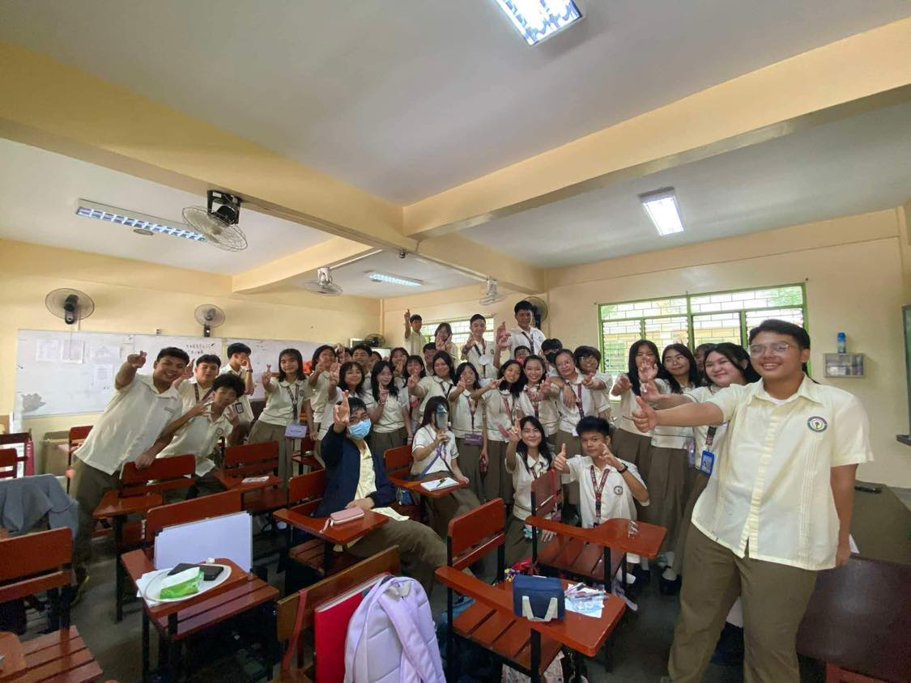
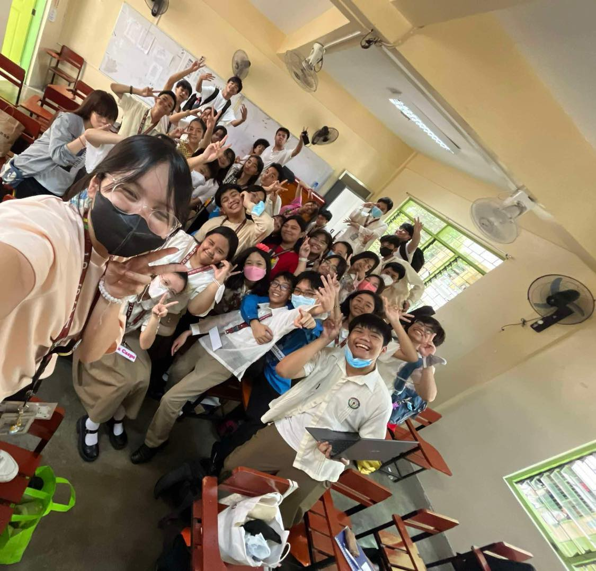
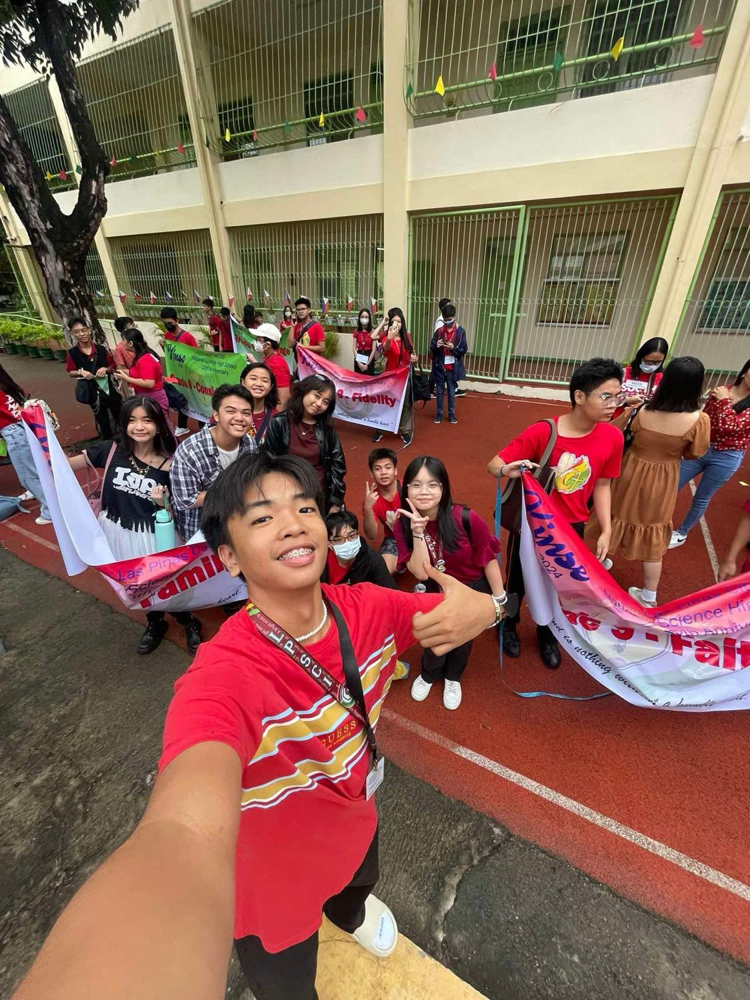
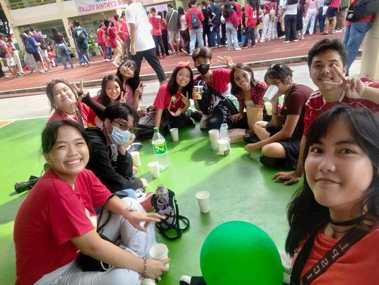
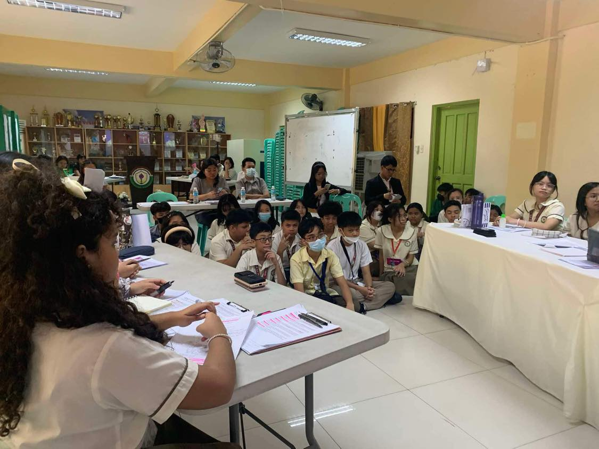
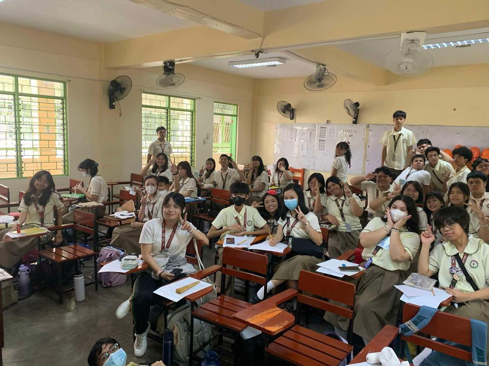
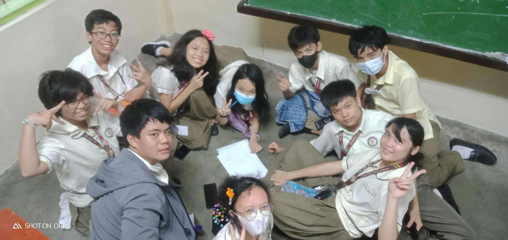
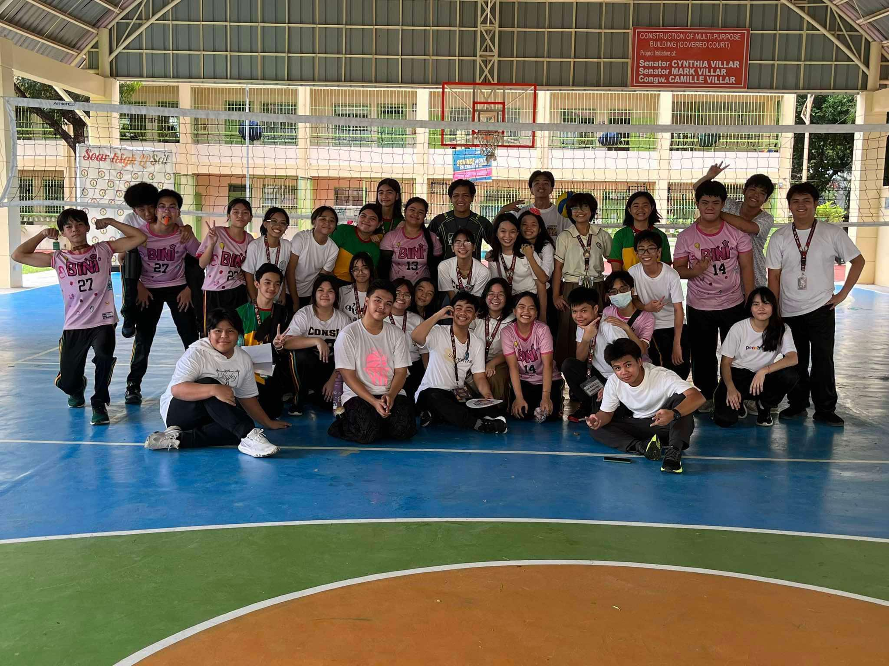

This page features the many different things we did
as Grade 9-Family for the First Quarter.

(pic taken by Christian Espinosa)
This was our first ever "class" picture, where almost everyone was included. Christian, being the tall one, served as photographer.
I genuinely forgot why we had this picture, but I do remember them making us perform any pose wanted.
As you can see me at the very front, I am NOT a good poser.

(pic taken by Chanel Bautista)
Taken on August 19, 2024, this was us after the City of Las Piñas casually decided to suspend classes in the middle of our discussion in Science.
The joy of everyone was absurd. The volcanic smog was upon us, the assignments were looming upon us, but we were too in the moment to even care.

(pic taken by Christian Espinosa)
This was us at LPSci's 15th Foundation ceremony! I was at the entire thing from 6 AM until 4 PM, and it was so much fun. The games, the dance numbers, and the talent show were all amazing.
This very picture was taken at 6:30 AM, just right before we did the Parade that absolutely burnt and fried my physical capabilites in the morning.

(pic taken by Janna Carmona)
Another picture of us at the ceremony! Our entire section won 2K pesos for having one of the most attendees out of any section, which was very cool.
We decided on spending this money by buying some softdrinks from 7/11 and later buying an entire pizza for fun. This picture shows us drinking said softdrinks.

(pic taken by Lance Esliza)
This was us watching the school's ASEAN debate during our time at AP class.
I forgot what the debate's main gist was about, but I distinctly remember myself getting so confused when one of the teams accidentally agreed with their opponent.

(pic taken by Lance Esliza)
Another class picture. I'm pretty sure we specifically took this picture so that we could put something in our ICT e-portfolio.
If so, sana counted po Ms...

(pic taken by Arkin Punzalan)
This is a picture of my group during the final Performance Task of ESP in Q1, which was also a collab with AP.
We had to create our own lipunang sibil, and decided on greenhouses for farmers nationwide.

(we made a Grade 10 person picture this)
This was us after a very chaotic session of volleyball during MAPEH.
After my team won the game (I was a proud cheerleader), Sir Santos decided it'd be fun if we went all out and rallied in every way imaginable.
(recorded by Ian Panahon)
And finally, this was us filming some trend where we all pretend to be asleep in a class. We've been planning to record it for a long time, and thankfully everyone consented.
I sincerely believe that this video pretty much summarizes our entire section in this first quarter.